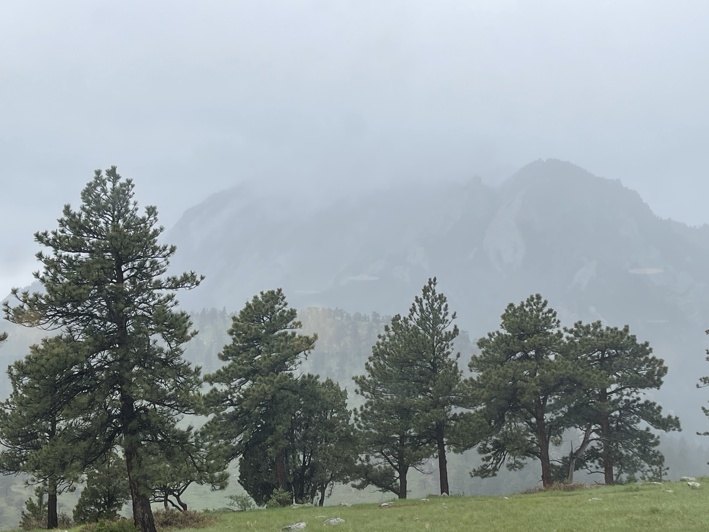
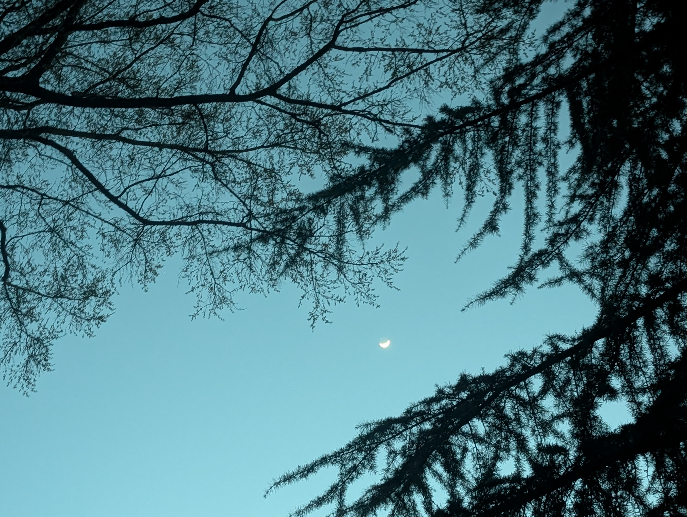
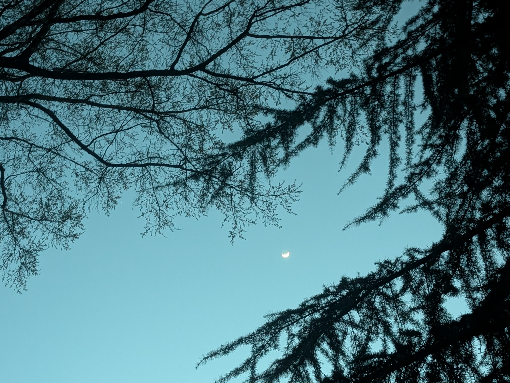
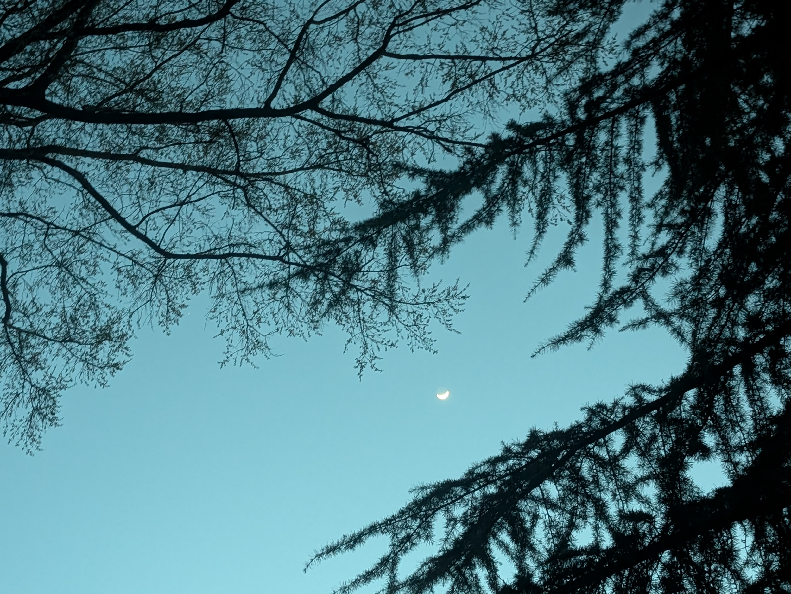

hi
this is my website
about me
i like stutter house music rn but my taste is ALL over the place. ok i am a fiend for clothes but as someone who is not insane i think all of the avant garde fashion bs is objectively horrendous. i just like shopping for clothes with my friends, and i love jeans :). i do rowing, skiing, shopping ofc, chess and little bit of hiking and biking. i guess i am an introvert but i am extroverted among my friends:)
some photos

 



currently
Studying for the NM title in Chess! Reading I am Malala by malala(duh) uhhhh that's about as much as i want to share on here